Snakes of Central African Republic
134 snake species are recorded in the Central African Republic in SnakeList: 46 venomous and 88 non-venomous, from 12 families.
- 134species
- 46venomous
- 88non-venomous
- 12families
These totals count the snakes SnakeList records as living in the Central African Republic. A species counts if it is recorded anywhere in the country, so not every snake lives in every region.
Species
Showing 134 species
- No photo yetAdler's Worm SnakeMyriopholis adleri
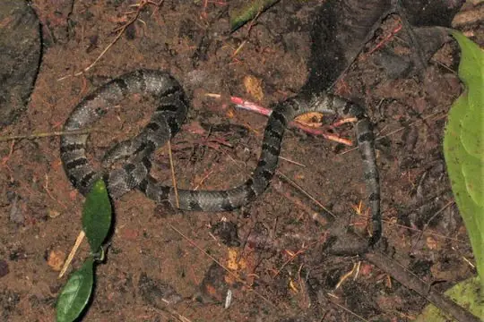
African Banded SnakeChamaelycus fasciatus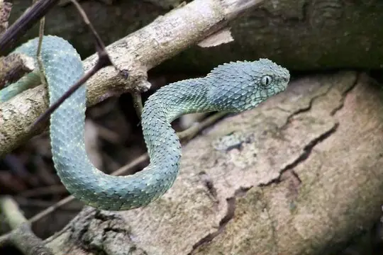
African Bush ViperAtheris squamigera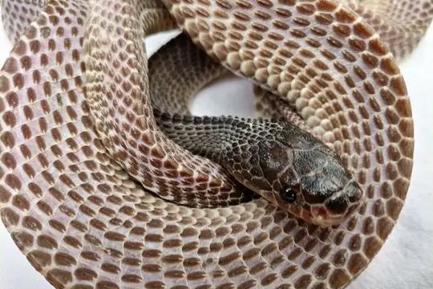
African File SnakeLimaformosa crossi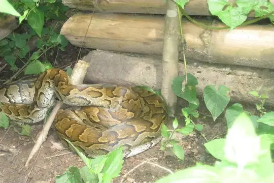
African Rock PythonPython sebae- No photo yetAfrican Shovel-nosed SnakeScaphiophis albopunctatus
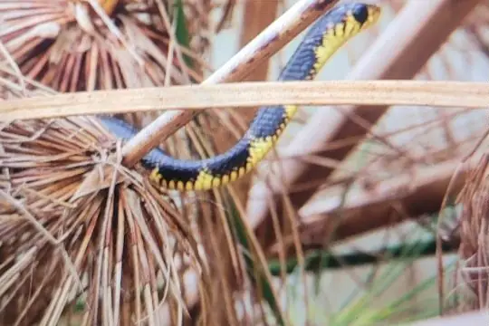
African Tree CobraPseudohaje goldii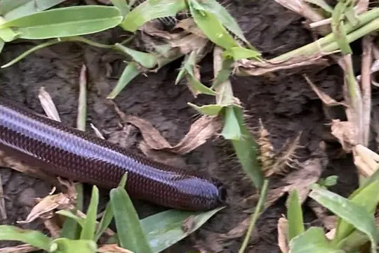
Angola blind snakeAfrotyphlops angolensis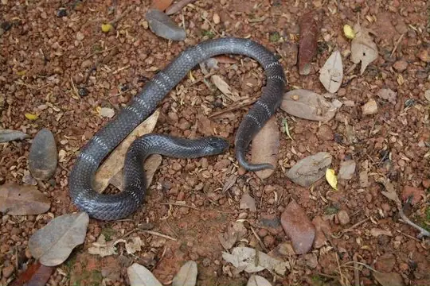
Angolan Garter SnakeElapsoidea semiannulata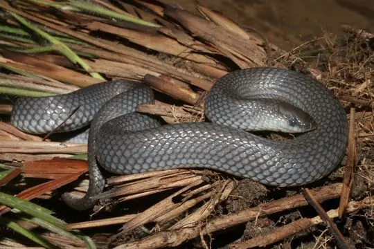
Angolan Shovel-snoutProsymna ambigua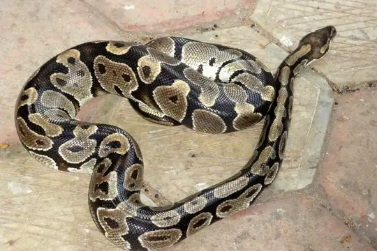
Ball PythonPython regius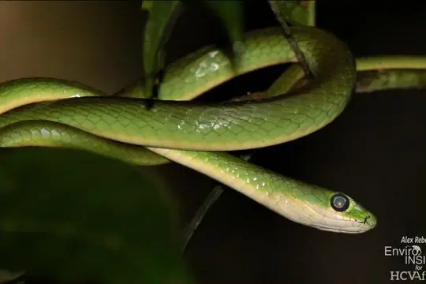
Bequaert's Green SnakePhilothamnus bequaerti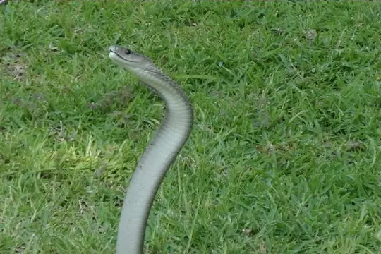
Black MambaDendroaspis polylepis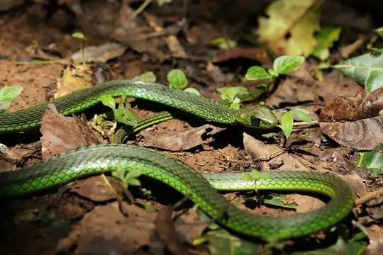
Black-lined Green SnakeHapsidophrys lineatus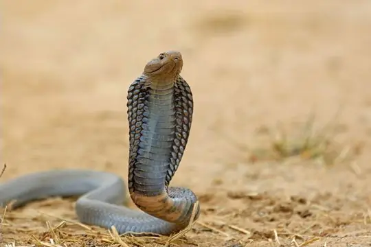
Black-necked Spitting CobraNaja nigricollis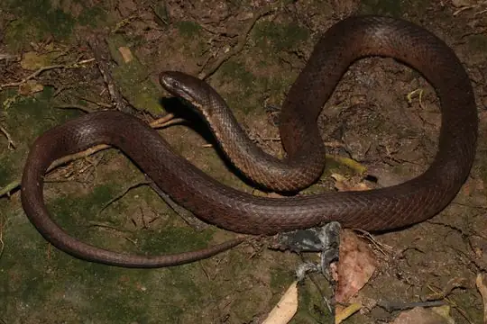
Blackbelly SnakeHydraethiops melanogaster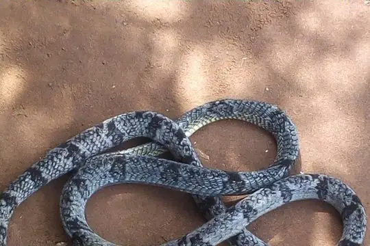
Blandings Tree SnakeToxicodryas blandingii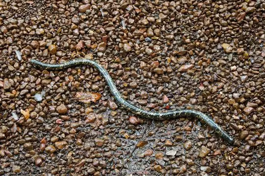
Blotched Blind SnakeAfrotyphlops congestus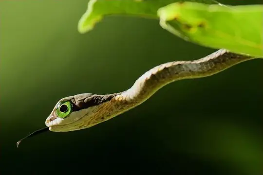
BoomslangDispholidus typus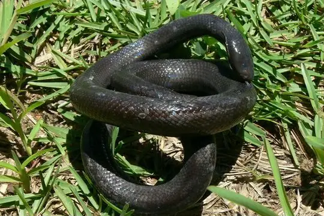
Boulenger's Mole ViperAtractaspis boulengeri Brahminy BlindsnakeIndotyphlops braminus
Brahminy BlindsnakeIndotyphlops braminus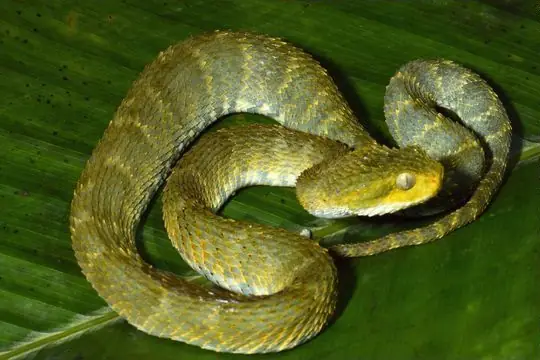
Broadley's Bush ViperAtheris broadleyi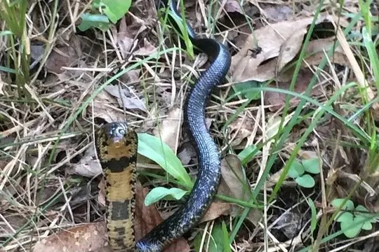
Brown Forest CobraNaja subfulva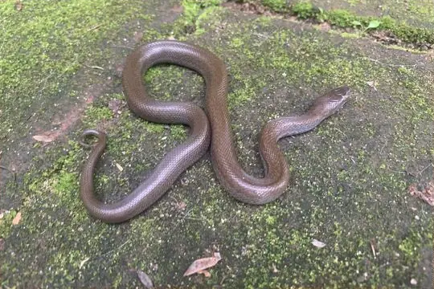
Brown House Snake (fuliginosus)Boaedon fuliginosus- No photo yetCaesar's African Water SnakeGrayia caesar
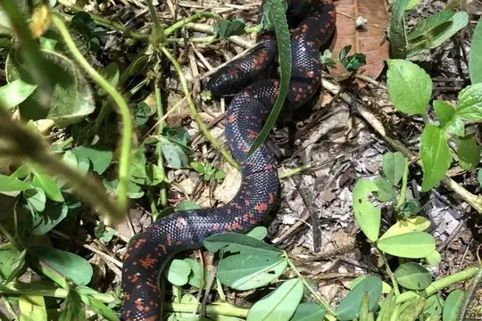
Calabar Ground PythonCalabaria reinhardtii- No photo yetCameroon Snake-eaterPolemon griseiceps
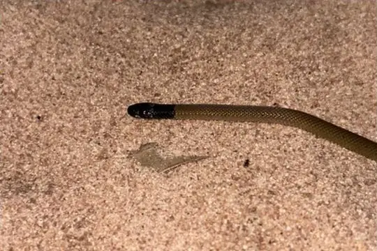
Cameroon Snake-EaterPolemon notatus- No photo yetCameroon Worm SnakeLetheobia decorosus
 Cape Wolf Snake (capense)Lycophidion capense
Cape Wolf Snake (capense)Lycophidion capense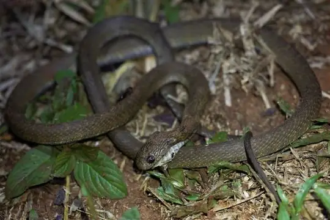
Central African Egg-eating SnakeDasypeltis fasciata- No photo yetCentral-African Lined House SnakeBoaedon paralineatus
- No photo yetChirio’s Wolf SnakeLycophidion chirioi
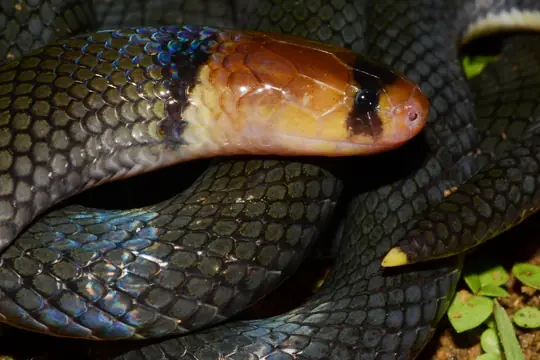
Collared Snake-eaterPolemon collaris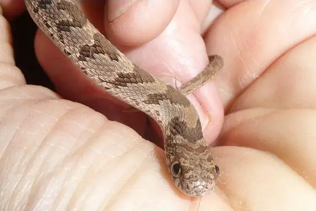
Common Egg EaterDasypeltis scabra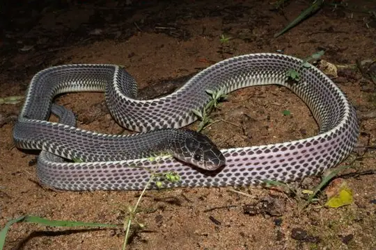
Common File SnakeLimaformosa capensis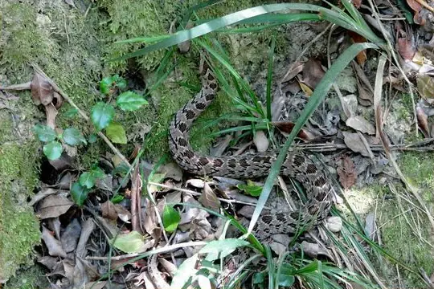
Common Night AdderCausus rhombeatus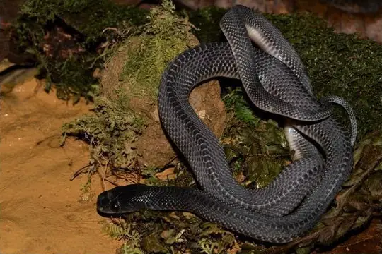
Congo File SnakeLimaformosa savorgnani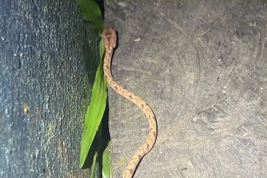
Diamondback Night StalkerToxicodryas adamanteus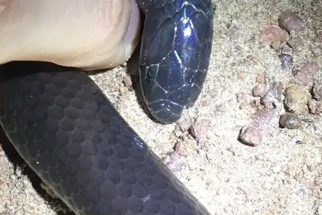
Dull Purple-glossed SnakeAmblyodipsas unicolor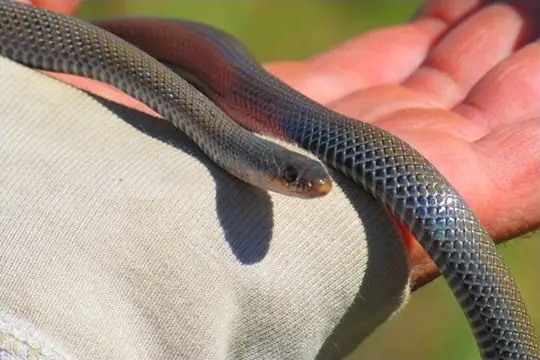
Eastern Crowned Smooth SnakeMeizodon regularis Egyptian CatsnakeTelescopus obtusus
Egyptian CatsnakeTelescopus obtusus Egyptian CobraNaja haje
Egyptian CobraNaja haje Egyptian Saw-scaled ViperEchis pyramidum
Egyptian Saw-scaled ViperEchis pyramidum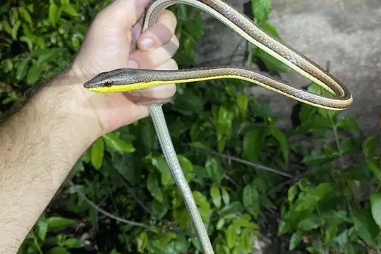
Elegant Sand RacerPsammophis elegans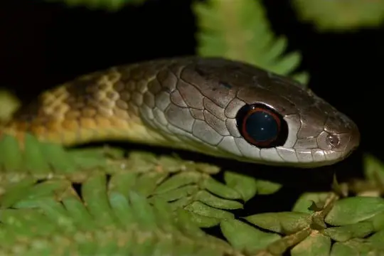
Emerald Green SnakePhilothamnus heterodermus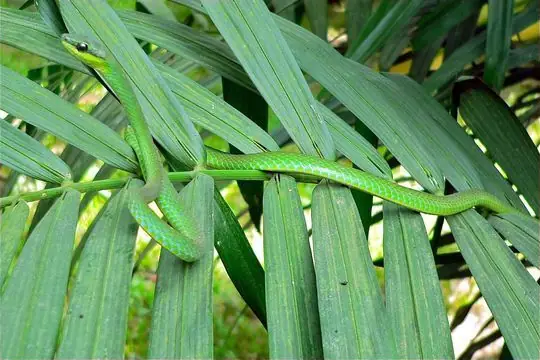
Emerald SnakeHapsidophrys smaragdinus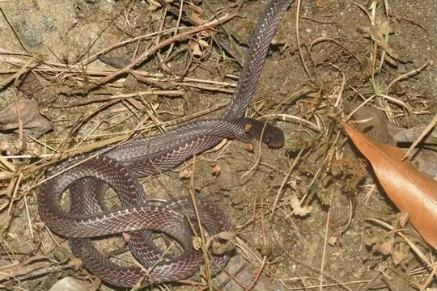
Equatorial File SnakeMehelya poensis- No photo yetFeeble Gracile Blind-snakeLetheobia debilis
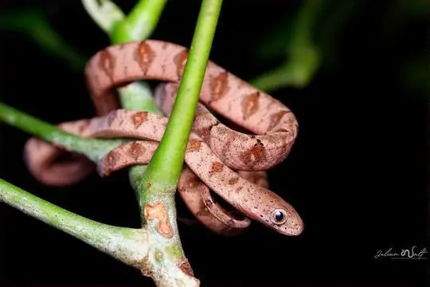
Fischer's Cat SnakeToxicodryas pulverulenta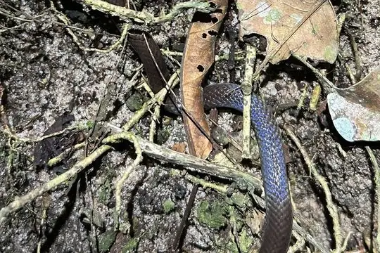
Flat Wolf SnakeLycophidion laterale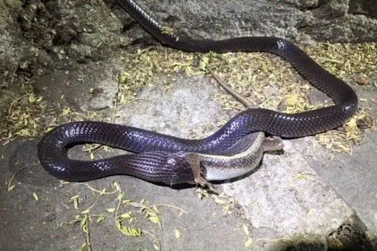
Flat-snouted Wolf SnakeLycophidion depressirostre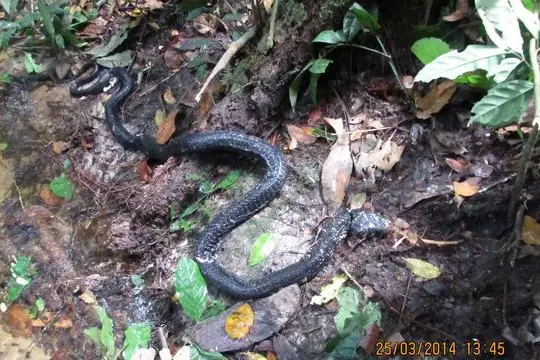
Forest CobraNaja melanoleuca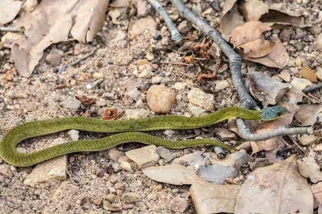
Forest Night AdderCausus lichtensteinii- No photo yetGabon Snake-eaterPolemon gabonensis
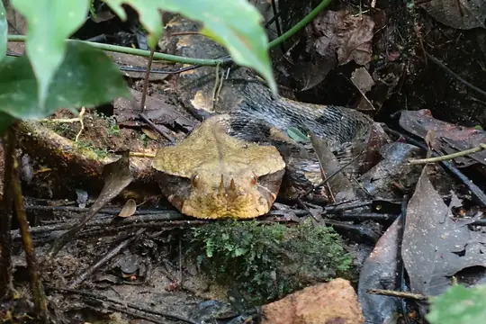
Gaboon ViperBitis gabonica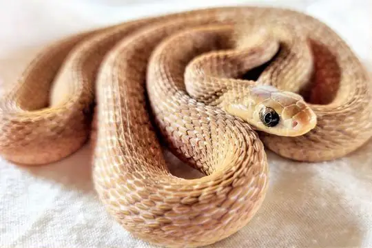
Gans' Egg EaterDasypeltis gansi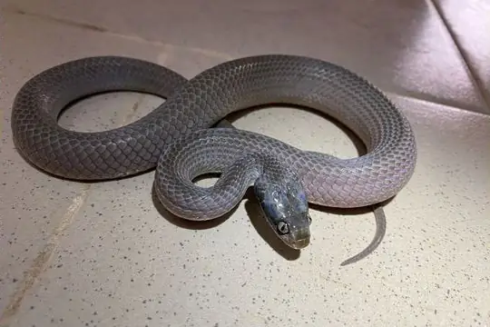
Ghana Herald SnakeCrotaphopeltis hippocrepis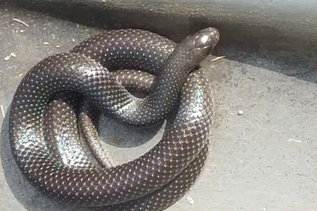
Ghana Shovel-snoutProsymna meleagris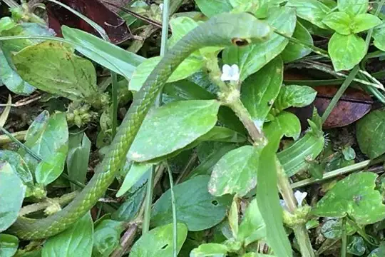
Green Bush SnakePhilothamnus nitidus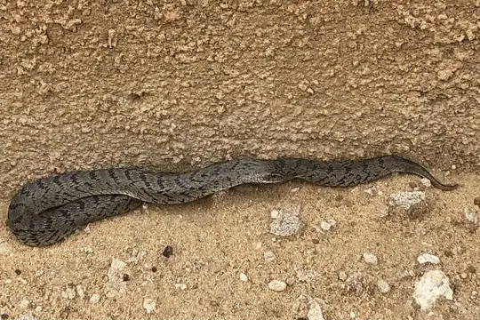
Green Night AdderCausus resimus- No photo yetGuiral's File SnakeLimaformosa guirali
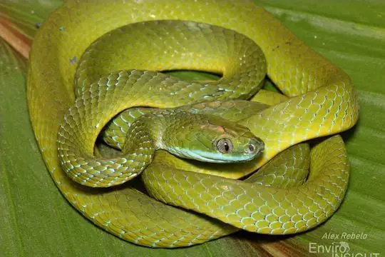
Günther's Green Tree SnakeDipsadoboa unicolor- No photo yetHaut-Oubangui Beaked SnakeLetheobia rufescens
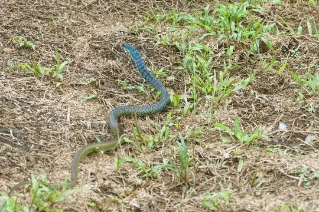
Hughes' Green SnakePhilothamnus hughesi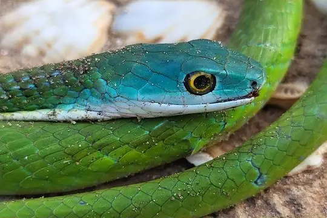
Irregular Green SnakePhilothamnus irregularis- Jackson's Black Tree SnakeThrasops jacksonii
- Jameson's MambaDendroaspis jamesoni
- Kirtland's Twig SnakeThelotornis kirtlandii
- Large-eyed Green TreesnakeRhamnophis aethiopissa
- Laurent’s Green Tree-snakeDipsadoboa viridis
- Lined Olympic SnakePsammophis lineatus
- Lineolate Blind SnakeAfrotyphlops lineolatus
- No photo yetLéopoldville Beaked SnakeLetheobia praeocularis
- Marsh Snake (fuliginoides)Natriciteres fuliginoides
- Mole Viper (aterrima)Atractaspis aterrima
- Mole Viper (corpulenta)Atractaspis corpulenta
- Mole Viper (reticulata)Atractaspis reticulata
- Mopane SnakeHemirhagerrhis nototaenia
- Müller’s Sand BoaEryx muelleri
- North African CatsnakeTelescopus tripolitanus
 Olive Grass RacerPsammophis phillipsii
Olive Grass RacerPsammophis phillipsii- Olive House Snake (olivaceus)Boaedon olivaceus
- Olive Marsh SnakeNatriciteres olivacea
- Olive Whip SnakePsammophis mossambicus
- Ornate African Water SnakeGrayia ornata
- Ornate Olympic SnakePsammophis praeornatus
- Pale Wolf SnakeLycophidion irroratum
- Pale-headed Forest SnakeBuhoma depressiceps
- Peri-Forest House SnakeBoaedon perisilvestris
- Plumbeous Centipede EaterAparallactus lunulatus
- Puff AdderBitis arietans
- Red-Black Striped SnakeBothrophthalmus lineatus
- No photo yetRed-lipped SnakeCrotaphopeltis hotamboeia
- Rhinoceros Viper (nasicornis)Bitis nasicornis
- Ringed Water CobraNaja annulata
- Roman's Carpet ViperEchis romani
- No photo yetSavanna Lesser File SnakeGonionotophis grantii
- Slender Green SnakePhilothamnus heterolepidotus
- Small-eyed File SnakeMehelya stenophthalmus
- Smith's African Water SnakeGrayia smithii
- Southern Sahel Speckled Shovel-snoutProsymna greigerti
- Spotted Blind SnakeAfrotyphlops punctatus
- Spotted Bush SnakePhilothamnus semivariegatus
- Spotted Dagger-tooth Tree SnakeRhamnophis batesii
- Spotted Night AdderCausus maculatus
- No photo yetSteinhaus' Worm SnakeAfrotyphlops steinhausi
- Stripe-bellied Sand SnakePsammophis subtaeniatus
- Striped House SnakeBoaedon lineatus
 Striped Sand SnakePsammophis sibilans
Striped Sand SnakePsammophis sibilans- Sudanese Sand SnakePsammophis sudanensis
- No photo yetSundevalls Worm SnakeTricheilostoma sundewalli
- Taylor's Wolf SnakeLycophidion taylori
- Thirteen-scaled Green SnakePhilothamnus carinatus
- Tholloni's African Water SnakeGrayia tholloni
- Uganda House SnakeHormonotus modestus
- Variable Burrowing AspAtractaspis irregularis
- Variable Marsh Snake (variegata)Natriciteres variegata
- Watson's Burrowing AspAtractaspis watsoni
- Weiler's Tree SnakeDipsadoboa weileri
- Werner's Garter SnakeElapsoidea laticincta
- Western Beaked SnakeRhamphiophis oxyrhynchus
- Western Crowned SnakeMeizodon coronatus
- Western Forest Centipede-eaterAparallactus modestus
- Western Green MambaDendroaspis viridis
- Western Green SnakePhilothamnus angolensis
- Yabassi Tree SnakeDipsadoboa duchesnii
- No photo yetYellow House SnakeBoaedon subflavus
- Yellow-flanked SnakeCrotaphopeltis degeni
- Zaire Snake-eaterPolemon robustus
- No photo yetAfrotyphlops chirioi
- Boaedon mendesi
- Lycophidion semicinctum
- No photo yetMyriopholis occipitalis
No snakes in Central African Republic match.
Central African Republic’s snakes in numbers
- Families: Colubridae 42, Lamprophiidae 24, Atractaspididae 14, Elapidae 11, Typhlopidae 11, Viperidae 11, Psammophiidae 10, Leptotyphlopidae 3, Prosymnidae 3, Boidae 2, Pythonidae 2, Pseudoxyrhophiidae 1.
- 2 are recorded in no other country in SnakeList: Chirio’s Wolf Snake, Afrotyphlops chirioi.
States and provinces
The states and provinces where SnakeList records snakes, with how many species each has. Each page has its families, venomous snakes, the species found only there, its cities and neighbours.
- Haute-Kotto Prefecture 1 species
- Mbomou Prefecture 11 species
- Sangha-Mbaéré 7 species
No place matches that.